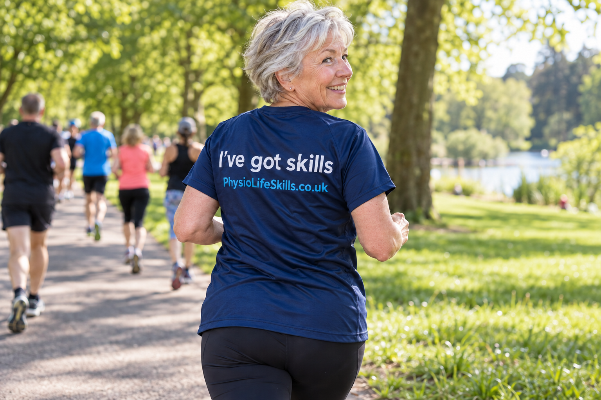
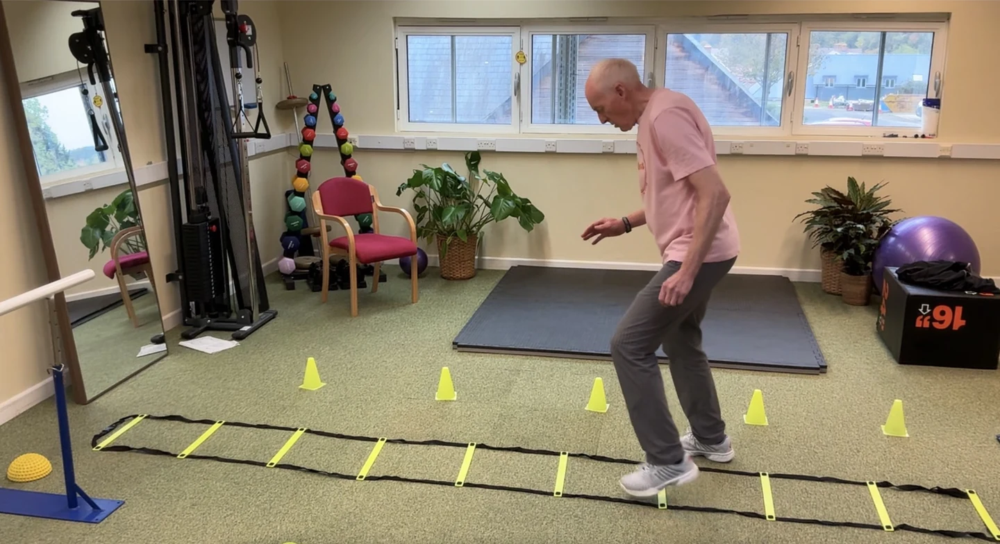
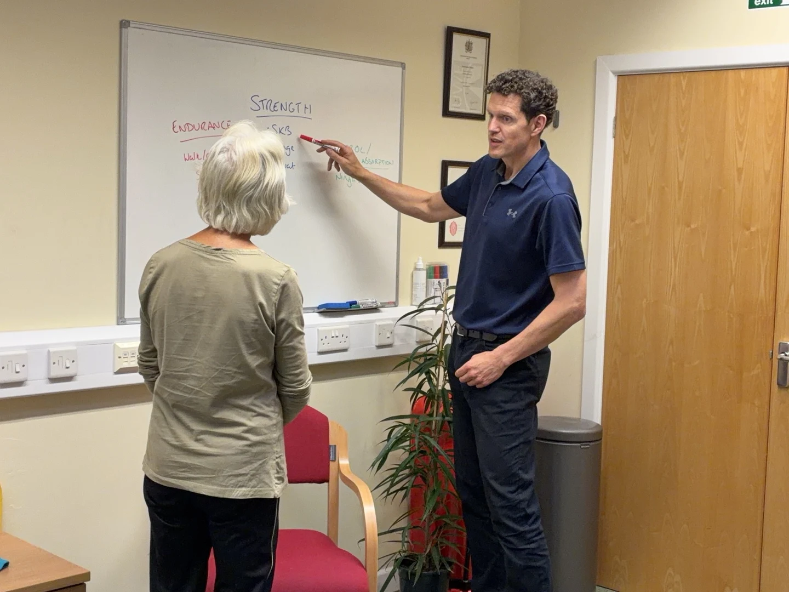
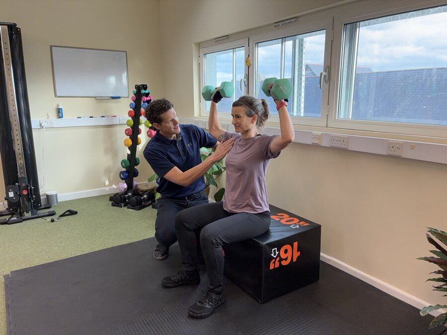

Strength · Balance · Movement
Build the physical skills for the life you love.
One assessment, shaped around you. Together, we’ll explore your strength, balance and movement, then create a personalised plan to help you regain confidence, improve what you can do and keep enjoying the things that matter to you.
Early access planned for 2027.

Why Physio Life Skills?
Understand your starting point. Take the next step.
Perhaps stairs feel harder, uneven ground needs more concentration, or getting up from the floor takes more effort. We’ll look at what’s going well and where you could improve, then identify practical priorities that relate to your everyday life and the activities you enjoy.
You’ll receive a personalised summary and practical plan, with options for follow-up support as you put it into practice.

One assessment · Personalised to you
Let’s find out what
would help you most.
We’ll bring together your story and practical measures, so you leave with a clearer picture of where you are and what to work on next.
Physio Life Skills
Your assessment.
Your next steps.
Strength, balance and movement, explored together with Justin.
Early access planned for 2027 Join the priority list →︎- 01
Tell me what matters
A questionnaire beforehand and a conversation about your health, everyday life and the things you’d like to do more confidently.
- 02
Explore your physical skills
Practical measures across strength, balance and movement, chosen to suit you, with more attention where it’s most useful.
- 03
Make sense of the results
We’ll talk through what’s going well and identify the one or two priorities most relevant to your goals.
- 04
Leave with a way forward
A clear summary and practical next steps, with options for support and reviewing your progress.
Different people · Different priorities
Same starting point.
Room for what you need.
“I’m less steady on walks.”We might spend more time exploring balance, alongside the strength and movement involved in walking.
“Stairs are getting harder.”We might give strength more attention and look at how you manage steps and everyday movements.
“I want to get down to the floor.”We might focus on movement, together with the strength and steadiness that help you get back up.
“I want to keep playing tennis well.”We might explore the strength, balance and movement involved in reaching for shots, changing direction and moving around the court.
“I want to walk the coastal path.”We might look at how you manage uneven ground, steps and slopes, and what would help you feel more capable on the route.
“After menopause, I want to get stronger—but I don’t know where to start.”We might give strength more attention, explore your starting point and agree practical first steps towards a routine you feel confident doing.

A first look at your life skills
What might help
you most?
Answer 12 short questions about everyday life to see where strength, balance or movement may deserve more attention. It’s a simple way to begin thinking about your Physio Life Skills assessment.
See your result straight away. Afterwards, you can choose to share it with me or sign up for occasional Physio Life Skills emails.
Try the 12-question profile →︎ An example profile — a starting point for your next steps
An example profile — a starting point for your next steps
Is it for me?
You do not need to wait for something to go wrong.
✓You want to invest in your future health and independence.
✓You have noticed a change in strength, balance or confidence.
✓You’re not sure where to start and would like a little bit of guidance.
✓You would value a clear plan shaped around your life.

Early access · 2027
Be among the first
to experience it.
Join the priority list to hear when carefully limited pilot and early-access appointments become available. There is no obligation to book.
I’m also developing a six-week programme with video guidance and follow-up support. Join the priority list to hear more as it takes shape.
Join the priority list →︎ This opens your email app. Tell me you’d like to join; you don’t need to choose a particular area.Would you also like occasional emails?
Receive practical notes from Justin about strength, balance, movement and staying active. This is a separate choice from the priority list.
Receive Physio Life Skills emails →︎Useful answers
Before you begin.
Is this ordinary physiotherapy?+
It is led by the same clinical reasoning, but the starting point is different. Physiotherapy often begins with pain or injury. Physio Life Skills begins with the physical qualities you want to understand, preserve or develop.
Do I need to be fit already?+
No. The assessment meets you where you are. It is not a competition and the purpose is not to compare you with the person beside you.
When will the assessment be available?+
Early-access appointments are planned for 2027 after the assessment has been carefully trialled. The appointment length and fee will be confirmed before booking opens. Join the priority list to hear when the first appointments become available.
Do I choose Strength, Balance or Movement?+
No. There is one Physio Life Skills assessment. We’ll look across all three and agree where to focus, guided by your goals and what we find.
What happens afterwards?+
We’ll agree practical next steps. You may feel ready to work on these yourself, or you may want support with exercises and a follow-up to review progress. If a concern needs more detailed assessment, we’ll discuss that too.
Start where you are
Build towards the life
you want to keep living.
Physio Life Skills is being carefully developed for early access in 2027 at Glasshouse Studios in Fordingbridge.
Join the priority list ↑ Explore the assessment ↑ Map, parking & directions →︎